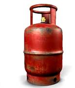
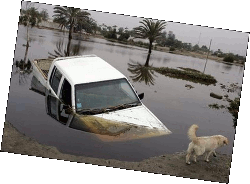

Que hacer en caso de emergencias
En todos los casos lo más importe es mantener la calma y actuar con firmeza y rapidez. Tener un plan de contingencia y los conocimientos de cómo actuar pueden darte la ventaja para sobrevivir a cualquier eventualidad.
Corto circuito
Se denomina cortocircuito al fallo en un aparato o línea eléctrica por el cual la corriente eléctrica pasa directamente de la fase al neutro o tierra en sistemas de corriente alterna, o entre polos opuestos en el caso de corriente continua.
Si te encuentras en esta situación, procede de la siguiente manera:
1. Corta la corriente en la caja de distribución principal (Breckers).2. Llama a los bomberos o a la compañía de electricidad.
3. En caso de un incendio eléctrico, no intente apagar el fuego con agua.
Incendio
El incendio es un fuego fuera de control y puede iniciarse de manera instantánea o gradual. Dependiendo de su magnitud, los incendios pueden provocar la pérdida de vidas humanas, daños materiales, interrupción de servicios y la afectación al ambiente, entre otros.
Si detectas un incendio, mantén la calma y sigue los siguientes pasos:
1. Si estás en tu hogar saca a todos los integrantes de tu familia y a tus mascotas. No regreses por cosas materiales.2. Si estás en una escuela, ofcina o edifcio público sigue las instrucciones del personal de protección civil.
3. Si puedes, cierra la puerta para evitar que el fuego se propague.
4. Si puedes y sin ponerte en riesgo, cierra las válvulas principales de gas y/o llaves de paso. Llama a los Bomberos.
Si quedas atrapado por el fuego:
1. Mantén la calma y si tienes un teléfono a la mano, marca al 171 e informa a la operadora tu ubicación y el número de personas atrapadas.2. Entra a una habitación que no haya sido alcanzada por el fuego. Cierra la puerta de la habitación y cubre con una toalla o manta la parte baja de la puerta para evitar la fltración del humo.
3. Grita para pedir ayuda a través de la ventana para alertar a los vecinos.
4. Espera los servicios de emergencia y NO intentes saltar al vacío.
Como escapar del humo:
1. Por sus características, el humo tiende a elevarse y por ello te recomendamos, mantener la calma y avanzar a gatas o en cuatro patas.2. Cubre tu nariz con un trapo húmedo, esto permitirá que respires menos humo.
3. Si el humo es muy denso y se te difculta respirar por la nariz, cubre tu boca con un trapo, aspira profundamente y saca el aire lentamente.
4. Si el humo te impide ver el camino para escapar, sigue una pared para encontrar la salida.
5. Antes de abrir cualquier puerta, toca con el dorso de la mano su superfcie para detectar si está caliente; si es así, no la abras, puede haber fuego del otro lado, busca otra ruta de evacuación.
Si tu ropa se quema:
Recuerda siempre: detente, tírate y rueda1. Detente. Mantén la calma, no corras.
2. Tírate. Ya sea en área abierta o cerrada, tírate inmediatamente al piso, cubriéndote la cara con las manos.
3. Rueda. Una y otra vez para sofocar las llamas. El rodamiento logra que se apaguen las llamas al quitarles oxígeno. Cubre tu cara.
Fuga de gas
Las consecuencias de un escape de gas pueden ser varias. Si el escape de gas se encuentra en un lugar abierto, una explosión es poco probable, ya que el gas se disipa y dispersa rápidamente en el aire.
Pero si por el contario, el lugar está cerrado pueden ocurrir dos hechos:
- Una explosión que puede derrumbar el sitio, matar a aquellas personas que estén cerca y/o herir a aquellas que están un poco más alejadas.
- Si hay personas dormidas en el lugar, éstas pueden morir
por intoxicación, ya que el gas es dañino para los pulmones.
El gas aunque no se ve, tiene un olor que hace picar la nariz,
cuando se sienta esto en casa cerca de la cocina o si se tiene un
calentador de agua a gas, es recomendable:
2. Abre ventanas y puertas para dispersar el aroma y localiza el origen de la fuga, y avisa inmediatamente a tus familiares.
3. No prendas ni apagues aparatos eléctricos, ni siquiera interruptores de luz.
4. No enciendas cerillos, velas o encendedores y si te es posible cierra la válvula del gas.
Desastre natural
En caso de un desastre natural (terremotos, inundaciones, huracanes o tormentas, etc...) siempre debes mantener la calma, no realizar acciones precipitadas y estar siempre atento a la información oficial.
Sin importar el tipo de evento es recomendable:
1. Asegúrate de que tu familia tenga un kit de emergencia y un
plan de contingencia, asignándole un rol a cada uno de los
miembros. Mantén el kit actualizado y guárdalo en un lugar de fácil
acceso, dentro de una mochila o bolso liviano.
2. Conoce las vías de evacuación y las zonas de seguridad.
Identifícalas y ensaya previamente el tiempo que tardarías en
movilizarte a tu zona segura.
3. Establece junto a tu familia un punto de reunión por si se
encuentran dispersos.
4. Organízate con tu comunidad para que sea autosuficiente
durante las primeras 72 horas después de ocurrido el evento.
5. Informa al resto de tus familiares adónde se dirigirán
para que puedan localizarlos luego del evento.
6. En caso de que tus hijos se encuentren en el colegio, designa
quién los va a pasar a buscar luego de terminado el evento.
7. Identifica la ubicación de las llaves de paso de gas e
interruptores de electricidad, las cuales deberás cerrar en caso
de evacuación de emergencia.
8. Ayuda al que esté impedido de reaccionar.
9. No almacenes documentos importantes en lugares bajos. Tenlos
en lugares en altura o en contenedores herméticos para evitar que se
dañen. Recuerda que en caso de evacuación los debes llevar contigo.